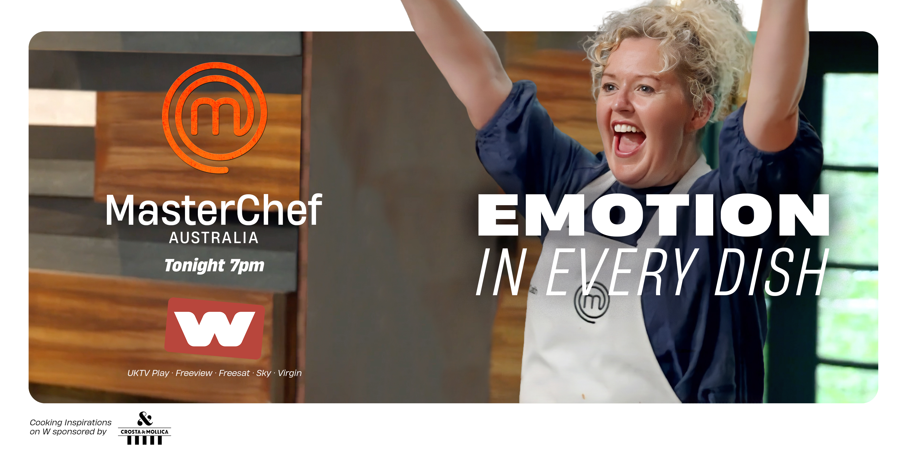
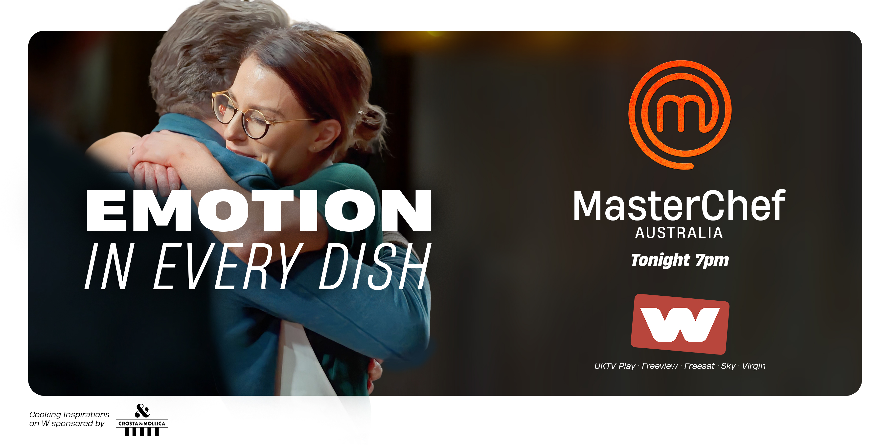
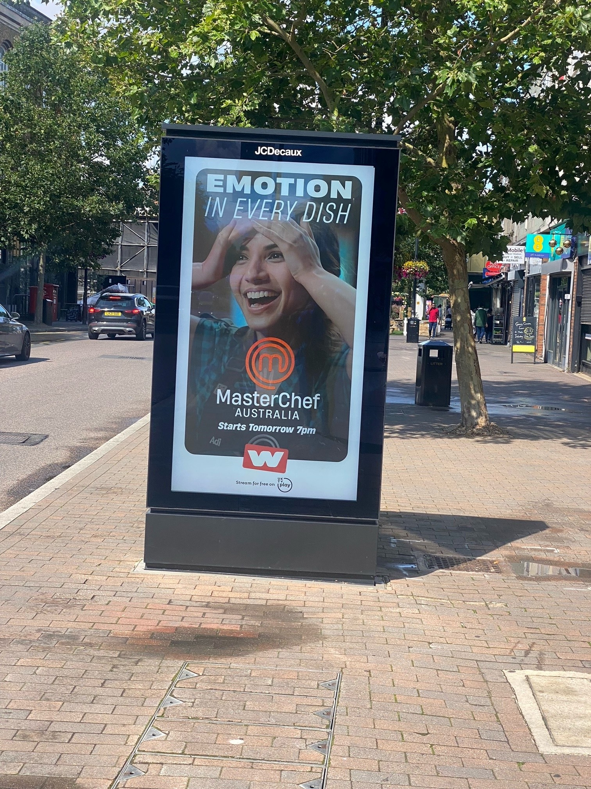
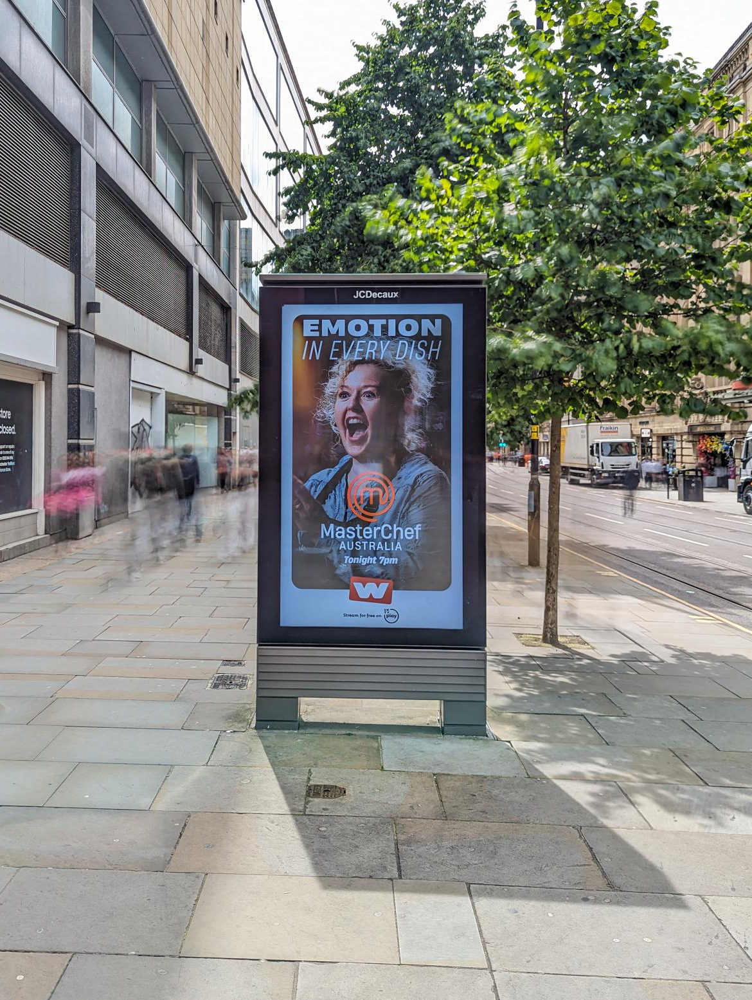

MASTERCHEF AUSTRALIA -
CREATIVE CAMPAIGN OOH
A brand campaign for the new series of MasterChef Australia. This OOH campaign ran across various outdoor sites and London Underground Stations, with multiple creative versions serving up ‘emotion in every dish’ and celebrating the channels brand promise of ‘Life Unfiltered’.
 


 